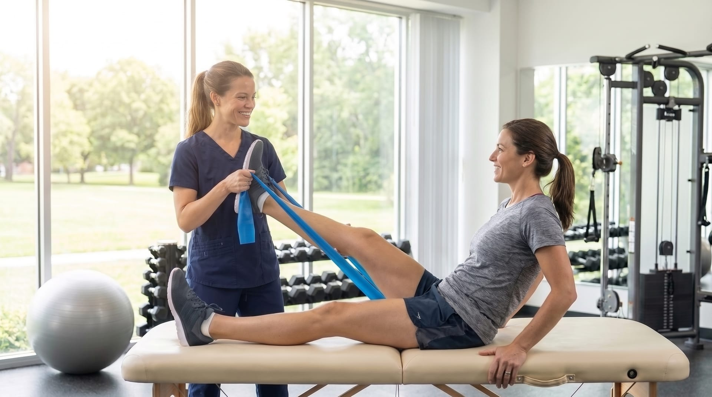

Cuidar do seu
corpo
em cada fase,
com
acolhimento
60 minutos para ouvir a sua história e montar um plano exclusivo de tratamento.
Segunda a sexta, com horários flexíveis.
Jardim Nasralla, Bauru-SP.
Especialidades
Um cuidado para cada fase da sua vida
Deslize para conhecer as áreas de atuação, todas com avaliação completa e plano individual.
Sobre
Prazer, sou a Andréia
Sou fisioterapeuta especializada em saúde da mulher e acredito que nenhum tratamento funciona sem escuta. Cada corpo carrega uma história, e é por ela que começamos, sempre.
No consultório, você encontra um espaço seguro e sem pressa: avaliação completa, plano individual e acompanhamento próximo em todas as fases, da gestação à menopausa.
- Fisioterapeuta especializada em saúde da mulher
- Especialização em fisioterapia pélvica
- Atendimento individual em Bauru-SP
Como funciona
Três passos até o seu plano de cuidado
Avaliação
Uma conversa completa sobre a sua história, queixas e objetivos, com avaliação física detalhada.
Plano individual
Um programa de tratamento exclusivo para a sua fase, com metas claras e técnicas adequadas ao seu corpo.
Acompanhamento
Sessões regulares, reavaliações e ajustes. Você acompanha a evolução a cada encontro.
Acompanhe o dia a dia do consultório
Conteúdo sobre saúde da mulher, bastidores e dicas práticas. Toque em um post para abrir no Instagram.
Agende sua avaliação
O primeiro passo é cuidar de você
Envie uma mensagem e vamos encontrar o melhor horário para a sua avaliação.